한눈에 보기
- LLM은 호출이 끝나면 아무것도 남기지 않습니다. 그래서 여러 세션에 걸쳐 일하는 에이전트에게는 컨텍스트 창 밖에 따로 둔 기억이 필요합니다. 기억은 사실(무엇을 아나), 경험(어떻게 나아지나), 작업(지금 무엇을 생각하나) 세 기능으로 나뉩니다.
- 컨텍스트 창이 크다고 기억 문제가 풀리지 않습니다. 정답이 놓인 위치, 질문과 정답 사이의 단어 겹침, 입력 길이에 따라 정확도가 떨어집니다. 그래서 광고된 길이보다 '유효 길이'를 직접 재야 합니다.
- 기억에는 이름표가 두 개 붙습니다. 하나는 무엇을 담았는지를 나누는 CoALA의 종류(작업·일화·의미·절차), 다른 하나는 얼마나 믿을 수 있는지를 나누는 Hindsight의 역할(사실·경험·의견·관찰)입니다. 작업 기억은 저장하지 않고, 절차 기억은 사람이 확인한 뒤에 저장합니다.
- 기억은 쓰는 순간과 다시 정리하는 순간에 망가집니다. 원본은 추가만 하는 기록으로 지키고, 바뀐 사실은 지우지 않고 '대체(supersede)'해 이력을 남깁니다.
- 실습 4개를 따라 하면 내 PC에 Hindsight를 띄우고, 원본 기록·대체·인용 검사까지 갖춘 SQLite 미니 메모리 서버를 직접 만들 수 있습니다.
이런 분께 도움이 됩니다
- Claude Code 같은 에이전트에게 같은 설명을 계속 반복하고 있어서, 에이전트 메모리를 어떻게 설계할지 고민하는 개발자
- 논문 150편을 직접 읽지 않고 에이전트 메모리 연구의 핵심 숫자와 그 조건을 한 번에 파악하고 싶은 분
- CLAUDE.md나 메모리 파일을 관리하면서 사실이 덮어써져 사라지는 문제를 막고 싶은 분
핵심 내용
왜 에이전트에게 기억이 필요한가
- 기업이 생성형 AI에 300억~400억 달러를 썼지만 조직의 95%는 수익을 내지 못했다고 MIT NANDA 예비 보고서가 적었습니다. 보고서가 꼽은 핵심 장벽은 '학습'입니다. 대부분의 시스템이 피드백을 유지하지 못하고, 맥락에 적응하지 못하고, 나아지지 않는다는 것입니다. (2:49)
- 조사 범위: 2025년 1~6월, 공개 사례 300여 건 검토, 52개 조직 인터뷰, 리더 153명 설문
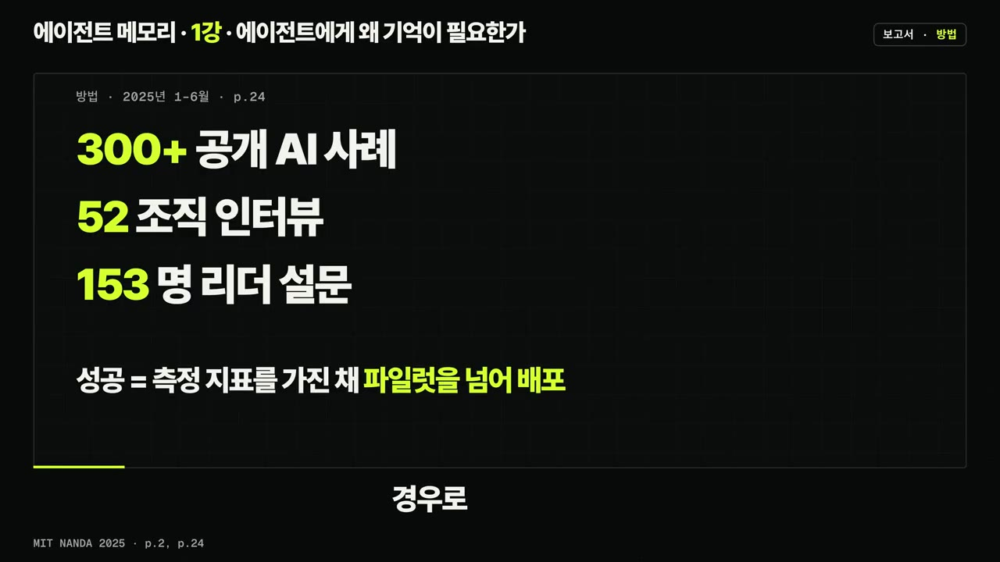
범용 도구(ChatGPT·Copilot): 80% 이상이 검토하거나 파일럿을 했고, 40% 가까이가 배포했습니다. 다만 개인 생산성만 높였을 뿐 손익 성과로 이어지지 않았습니다.
기업용 도구: 60%가 검토했고, 파일럿은 20%, 운영까지 간 곳은 5%였습니다.
한 변호사의 사례: ChatGPT가 고객 선호를 기억하지 못하고, 지난 수정에서 배우지 못해 같은 실수를 반복하고, 세션마다 맥락을 다시 넣어야 했습니다.
한계: 단계별 수치는 인터뷰에 기반한 방향 수준이고, 참여하겠다고 한 조직만 응답해 선택 편향이 있을 수 있다고 보고서 스스로 밝힙니다.
출발점은 LLM이 '상태가 없다(stateless)'는 점입니다. 호출이 끝나면 그 호출에서 있었던 일을 모델이 스스로 남기지 않습니다. (4:01)
- 비유하면, 일어날 때마다 싹 치워지는 책상과 같습니다. 컨텍스트 창은 책상 크기, 단기 기억은 책상 위, 장기 기억은 책상 밖 서랍입니다.
- 기억은 서랍에 넣어 두었다가 다음 호출 때 필요한 것만 골라 다시 책상에 올리는 정보입니다.
이 시리즈 전체의 주제는 서랍에 무엇을 넣고, 언제 어떻게 꺼내고, 언제 고치거나 버릴지입니다.
💡 에이전트가 이어서 일할 수 있느냐는 큰 컨텍스트 창이 아니라 기억 능력에 달려 있다. 서베이 『Memory in the Age of AI Agents』의 주장이다.
기억의 세 기능과 일을 맡기기 전 세 질문
- 서베이 4장은 기억을 '어떻게 구현하나'보다 '왜 필요한가'로 먼저 보고, 세 기능으로 나눕니다. (5:29)
| 기능 | 답하는 질문 | 예 | 책상 비유 |
|---|---|---|---|
| 사실 기억 | 에이전트는 무엇을 아는가 | 사용자 선호, 환경 상태 | 서랍 속 메모 카드 |
| 경험 기억 | 에이전트는 어떻게 나아지는가 | 지난 시도의 궤적·실패·성공에서 추린 절차와 전략 | 서랍 속 오답 노트 |
| 작업 기억 | 에이전트는 지금 무엇을 생각하는가 | 한 작업 안에서 용량이 제한된 채 관리되는 작업대 | 지금 책상 위 |
- 세 기능은 '겪은 일을 장기 기억에 쓰기 → 작업 기억에서 처리하기 → 필요한 것을 다시 꺼내기'라는 고리로 이어집니다.
- 사실 기억이 약하면 어떻게 되는지 보여 주는 예: LongMemEval에서 긴 컨텍스트 모델은 대화 기록 전체를 받았을 때가 정답이 든 세션만 받았을 때보다 성능이 30~60% 낮았습니다.
- 일을 맡기기 전에 다음 세 질문으로 필요한 기억을 점검합니다. (12:31)
- 무엇을 알아야 하나(사실) / 무엇에서 배워야 하나(경험) / 지금 무엇을 붙잡아야 하나(작업)
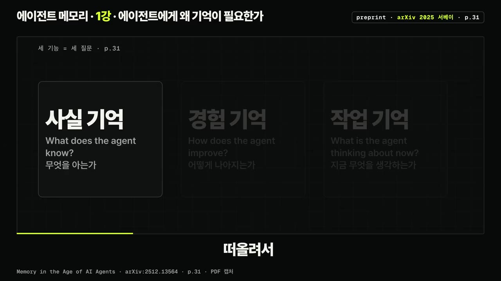
기억이 결과를 바꾼 증거: Reflexion과 Generative Agents
- Reflexion(NeurIPS 2023): 모델 가중치는 그대로 두고, 실패 신호를 말로 된 반성문으로 바꿔 에피소드 기억 버퍼에 남깁니다. (6:39)
- 구조: 행동자가 답을 만들고 → 평가자가 점수를 매기고 → 자기 반성 모델이 반성문을 쓰면 → 다음 시도에서 행동자가 반성문을 읽고 다시 풉니다.
- 코딩 과제에서는 모델이 만든 단위 테스트(최대 6개)로 점검했고, 기억에는 반성문 1개만 담았습니다.
- 같은 GPT-4 기준 Pass@1(마지막에 낸 답안 한 장의 정답률): HumanEval Python에서 80.1% → 91.0%, 가장 어려운 50문제를 Rust로 옮긴 조건에서 60.0% → 68.0%였습니다.
- 반례: MBPP Python에서는 77.1%로 기준(80.1%)보다 낮았습니다. 자체 테스트를 통과했지만 실제로는 틀린 '거짓 양성' 비율이 MBPP 16.3%, HumanEval 1.4%였기 때문입니다.
💡 연습 문제의 정답부터 틀려 있으면 반성문 기억도 소용없다. 판단 기준이 되는 테스트가 맞는지부터 확인해야 한다.
- Generative Agents(UIST 2023, GPT-3.5 Turbo): 에이전트 25명이 사는 가상 마을에서, 모든 경험을 자연어로 한 줄씩 쌓는 '기억 흐름(일기장)'을 둡니다. (8:19)
- 각 기억에는 자연어 설명, 생성 시각, 최근 접근 시각이 붙습니다.
- 꺼낼 때는 최근성·중요도·관련도를 각각 0~1로 맞춘 뒤 가중치 1로 더합니다. 중요도는 모델이 매기고(방 청소 2점, 데이트 신청 8점), 관련도는 임베딩 코사인 유사도로 계산합니다.
- 최근 사건들의 중요도 합이 150을 넘으면 '반성(reflection)'을 만듭니다. 하루 2~3번 반성했고, 하루 계획도 따로 세웠습니다.
- 절제 실험(평가자 100명이 매긴 순위를 TrueSkill 점수로 바꿈): 전체 구조 29.89, 반성 제거 26.88, 계획까지 제거 25.64, 기억 전부 제거 21.21이었고, 사람이 쓴 답은 22.95였습니다.
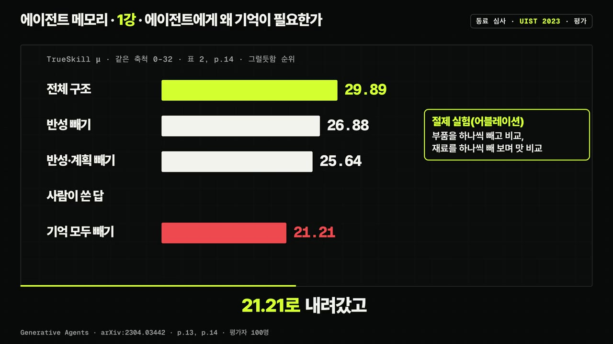
- 주의: 이 점수는 과제 성공률이 아니라 인터뷰 답변이 얼마나 그럴듯한지를 잰 것입니다.
- 발렌타인데이 파티 예시: 사용자가 넣은 설정은 두 가지뿐이었습니다. 이사벨라가 2월 14일 오후 5~7시에 홉스 카페에서 파티를 열려 한다는 것, 그리고 마리아가 클라우스를 좋아한다는 것입니다. (10:02)
- 이틀 동안 파티를 아는 에이전트는 1명(4%)에서 13명(52%)으로 늘었고, 초대받은 12명 중 5명이 실제로 왔습니다.
- 시장 선거 출마 소식을 아는 에이전트도 1명에서 8명(32%)으로 늘었습니다.
- 불완전한 기억도 기록됐습니다. 톰은 선거 이야기를 해야 한다는 건 기억했지만, 파티가 열리는지는 확신하지 못했습니다.
기억의 위험: 낡은 기억과 오염
- 취소된 규정과 새 규정을 함께 돌려준 두 기억 시스템에서, 에이전트는 1,620번 중 699번(43.1%) 취소된 규정대로 행동했습니다. 같은 논문은 기록을 꺼낼 때마다 아직 유효한지 확인하는 장치를 둬서 이 실패를 줄였습니다. (11:05)
- 이메일 한 통으로 심어 넣은 오염된 기억과, 맥락에 맞지 않게 공유되는 개인 정보도 위험 요소입니다. 화면의 수치는 '방어가 없는 이메일 비서, 속성 단위로 잰 위반' 조건의 값이고, 자세한 내용은 11강에서 다룹니다.
- 바로 쓸 수 있는 실천: 기억마다 만든 시각과 마지막으로 꺼낸 시각을 함께 적습니다. 논문의 '최근성'은 마지막으로 꺼낸 뒤 지난 시간으로 계산하기 때문입니다.
컨텍스트는 기억이 아니다: 정확도를 깎는 세 조건
- 서베이의 구분에 따르면, 컨텍스트 엔지니어링은 '그 순간 모델과의 접점'을 최적화하는 일이고, 에이전트 기억은 '하나의 컨텍스트 창을 넘어 이어지는 상태'를 유지하는 일입니다.
- 토큰은 모델이 글을 읽고 쓰는 단위(글자 조각)이고, 컨텍스트 창은 한 번 호출할 때 입력과 출력을 합쳐 쓸 수 있는 토큰의 최대치입니다.
| 연구 | 바꾼 조건 | 핵심 결과 | 붙여야 할 조건 |
|---|---|---|---|
| Lost in the Middle (TACL 2024) | 정답의 위치 | 정답이 맨 앞이나 맨 뒤에 있을 때 가장 높고 가운데서 떨어지는 U자 곡선 | 2023년 모델, 100토큰 이하 위키 문단 |
| NoLiMa (ICML 2025) | 질문과 정답의 단어 겹침 최소화 | 128K 이상을 지원한다는 13개 모델 중 11개가 32K에서 점수가 절반 아래로 | 인공 바늘, 인물 이름 하나를 답하는 단순 과제 |
| Context Rot (Chroma, 심사 전) | 길이와 방해 정보 | 18개 모델 모두 짧은 입력이 크게 높음 | 300토큰 입력은 라벨로 고른 정답 구간(오라클) |
- Lost in the Middle 세부: 문서 10·20·30개(약 2K·4K·6K 토큰). GPT-3.5 Turbo, 문서 20개 조건에서 정답이 맨 앞이면 75.8%, 맨 뒤면 63.2%, 10번째 자리면 53.8%였습니다. 문서를 하나도 안 준 경우(56.1%)보다 낮았고, 정답 문서 하나만 주면 88.3%였습니다. 창을 16K로 늘린 모델도 곡선이 거의 겹쳤습니다. 단, 같은 논문의 다른 실험에서 Claude 1.3은 거의 완벽했습니다. (20:14)
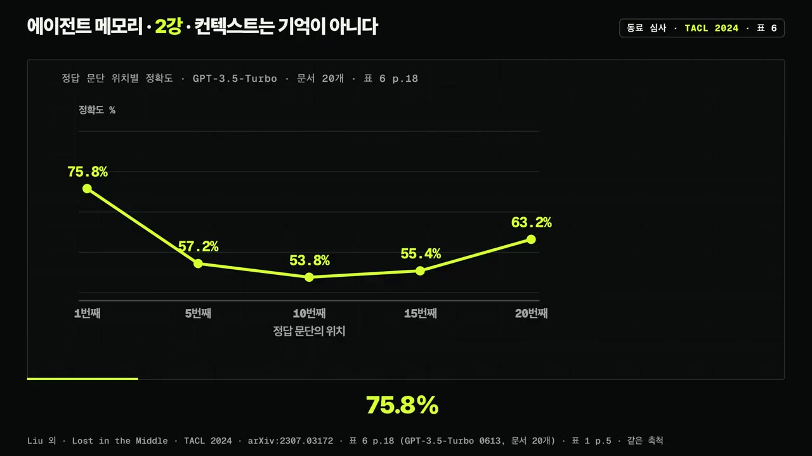
- NoLiMa 세부: 책 10권의 조각으로 건초더미를 만들고 바늘을 26곳에 바꿔 넣어 길이마다 7,540번 시험했습니다. GPT-4는 99.3%에서 69.7%로 떨어졌습니다. (21:47)
- 유효 길이: 짧은 입력 점수의 85%를 넘게 유지하는 가장 긴 길이
- GPT-4는 주장 128K / 유효 8K, Claude 3.5 Sonnet은 200K / 4K, Gemini 1.5 계열은 200만 / 2K(자막상 모델명 일부 불분명)
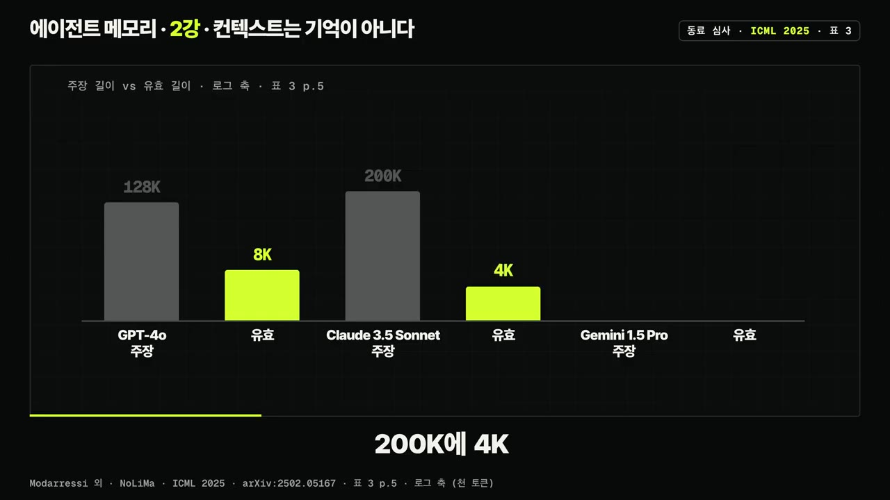
- 바늘 예시: "유키는 젬퍼 오페라 하우스 옆에 산다" ↔ 질문 "드레스덴에 가본 인물은?" 2단계 질문은 "작센주에 가본 인물은?", 상식형 질문은 "몇 년째 비건" ↔ "생선 요리를 못 먹는 인물은?"
- 원인: 겹치는 단어가 없으면 긴 입력에서 어텐션이 관련 정보를 찾기 어려워집니다.
- Context Rot 세부: LongMemEval 306문항에서 전체 입력(약 11만 3천 토큰)과 정답 구간만 남긴 입력(약 300토큰)을 비교했습니다. Claude 계열의 격차가 가장 컸는데, 확신이 없을 때 답을 보류한 탓으로 설명합니다. 방해 문장이 하나만 있어도 성능이 떨어졌습니다. 또 논리가 이어지는 건초더미가 문장을 뒤섞은 건초더미보다 오히려 낮았습니다. 채점은 GPT-4.1 판정기가 했습니다. (24:08)
💡 정보가 컨텍스트에 있느냐보다, 그 정보가 어떻게 제시되느냐가 더 중요하다.
창을 관리하는 방법과 '100만 토큰이면 되지 않나' 반론
- MemGPT(프리프린트): 컨텍스트 창을 운영체제의 주기억(RAM)에, 창 밖 저장소를 디스크에 빗대고, 모델이 함수 호출로 정보를 직접 넣고 빼게 합니다. (25:38)
- 창의 70%(논문 예시)를 넘으면 '메모리 압박 경고'를 넣어 중요한 내용을 저장하게 합니다. 창이 가득 차면 오래된 메시지는 요약으로 바꾸되, 원문은 회상 저장소에 남깁니다.
- 예: 사용자가 "남자친구가 생일 케이크를 구워 줬다"고 말한 뒤 경고가 뜨자, 모델이 "생일은 2월 7일"을 작업 컨텍스트에 적어 둡니다.
- 지난 5세션의 내용을 묻는 시험에서 GPT-4 Turbo 단독 35.3%, MemGPT를 붙이면 93.4%였습니다(기준선은 지난 세션 요약만 본 조건, LLM 판정기 채점).
- 한계: 문서 QA에서 검색 결과를 끝까지 넘겨보지 않고 멈추는 경우가 많았고, GPT-3.5는 함수 호출 능력이 부족했습니다.
- Anthropic 엔지니어링 글: 좋은 컨텍스트 엔지니어링은 원하는 결과를 낼 가능성을 최대화하는 '가장 작은 고신호 토큰 집합'을 찾는 일입니다. 같은 글에 나오는 네 방법은 다음과 같습니다. (26:57)
- 파일 경로 같은 가벼운 표시만 들고 있다가 필요할 때 불러오기
- 창이 차면 요약하고 새 창에서 이어 가기(압축)
- 창 밖 노트에 진행 상황 적기(구조화된 노트)
- 깨끗한 창에서 일하고 보통 1,000~2,000토큰 요약만 돌려주는 서브에이전트
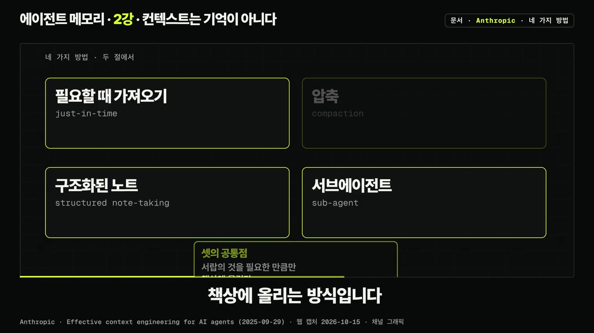
- 반론에 대한 답: 100만 토큰을 지원한다는 GPT-4.1의 유효 길이는 16K, Gemini 2.5 Flash는 2K, 1,000만을 지원한다는 Llama 4 Scout는 1K였습니다(NoLiMa 블로그). 검색 문서를 20개에서 50개로 늘려도 GPT-3.5 Turbo는 약 1.5%만 올랐습니다. (27:36)
💡 받을 수 있는 길이와 제대로 쓰는 길이는 따로 재야 한다. 과제가 달라지면 유효 길이도 달라진다.
기억의 네 종류(CoALA)와 분류의 여러 축
- 서베이는 장기·단기 기억 구분만으로는 부족하다며 세 렌즈를 씁니다. 형태(토큰 수준·파라미터·잠재 기억), 기능(사실·경험·작업), 변화(만들어지고 바뀌고 꺼내지는 과정)입니다. 기억이라는 이름표 하나만 붙이면 개념이 섞인다는 진단입니다. (34:52)
- CoALA(TMLR 2024): 인지 아키텍처(마음의 설계도)를 빌려 언어 에이전트를 기억 모듈, 행동 목록, 결정 주기(계획→실행→관찰)로 나눕니다. (35:47)
| 종류 | 담는 것 | 비유 | 저장 여부(이 시리즈 규칙) |
|---|---|---|---|
| 작업 기억 | 지금 결정 주기에서 쓰는 정보. LLM 입력이 여기서 조립되고 출력이 여기에 저장됨 | 책상 위 포스트잇 | 저장하지 않음 |
| 일화 기억 | 언제 무슨 일이 있었는지(예: Generative Agents의 사건 목록) | 일기장 | 저장 |
| 의미 기억 | 세계와 자신에 대한 지식(예: Reflexion의 "부엌에 식기세척기가 없다") | 백과사전 | 저장 |
| 절차 기억 | 일을 하는 방법. 가중치 속 암묵 지식과 코드·프롬프트·규칙·스킬 파일 속 명시적 절차 | 자전거 타기 / 레시피 카드 | 사람이 확인한 뒤 저장 |
- CoALA의 경고: 에이전트가 절차 기억에 새 행동을 직접 써넣으면 버그를 만들거나 설계 의도를 벗어날 수 있어서, 일화·의미 기억에 쓰는 것보다 훨씬 위험합니다. (37:01)
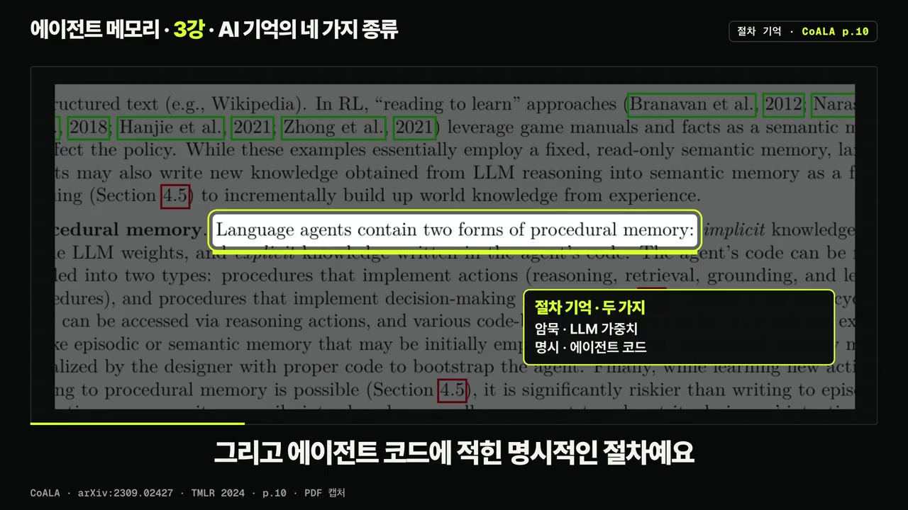
- 같은 기록에 이름표가 두 개 붙기도 합니다. Reflexion의 반성문을 서베이는 '경험 기억 중 전략 기반 기억'으로, CoALA는 '의미 기억에 쓰는 학습'으로 봅니다.
종류와 역할은 다른 축: Hindsight
- Hindsight(ACL 2026 시스템 데모, 저자 7명 중 3명이 Vectorize 소속): 지금의 기억 시스템 대부분은 근거(관찰한 것)와 추론(내린 판단)을 한 서랍에 섞는다고 지적합니다. 그래서 기억 뱅크를 네 네트워크로 나눕니다. (39:38)
- 세계: 외부 세계의 객관적 사실 / 경험: 에이전트가 한 일을 1인칭으로 적은 기록 / 의견: 주관적 판단(문장 + 0~1 믿음의 세기 + 만든 시각, 새 증거가 오면 갱신) / 관찰: 여러 사실을 합친 대상 요약
- 연산: Retain(넣기), Recall(꺼내기: 의미·키워드·그래프·시간 네 갈래 검색을 합침), Reflect(답하면서 의견을 만들거나 고치기)
- Alice 예시(논문 4쪽 그림 1)에 두 이름표를 함께 붙이면 다음과 같습니다. (41:01)
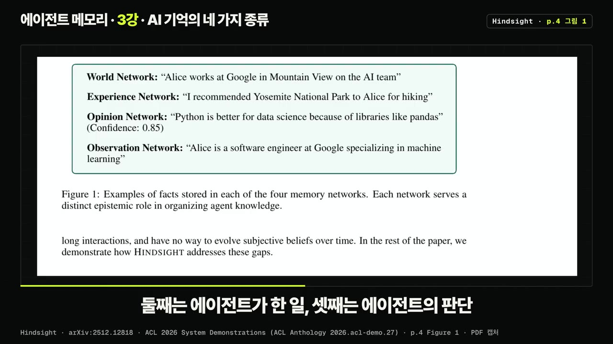
| 문장 | Hindsight 역할 | CoALA 종류 |
|---|---|---|
| Alice는 마운틴뷰의 구글 AI팀에서 일한다 | 세계 | 의미 |
| 나는 Alice에게 하이킹 장소로 요세미티를 추천했다 | 경험 | 일화 |
| 판다스 같은 라이브러리 때문에 데이터 과학에는 파이썬이 낫다(확신도 0.8x) | 의견 | 의미(단, 믿음으로 표시) |
| Alice는 머신러닝 전문 구글 소프트웨어 엔지니어다 | 관찰 | 의미 |
- 오프닝 숫자 39.0 → 83.6에 붙여야 할 조건: LongMemEval S 설정(500문항, 대화 하나가 약 11만 5천 토큰)에서 기억 시스템과 답변 모두 GPT-OSS 20B가, 채점은 GPT-OSS 120B가 맡은 결과입니다. 여러 세션에 걸친 질문은 21.1 → 79.7이었습니다. (42:42)
- 같은 표의 GPT-4o 전체 입력(60.2%)은 다른 보고서에서 가져온 값이고 채점자도 달라서, 같은 자로 잰 숫자가 아닙니다. 검색 토큰 예산은 논문 18쪽에 빈칸으로 남아 있습니다.
- 의견의 믿음의 세기는 논문이 정의한 값일 뿐, 그 의견이 맞을 확률로 검증한 값이 아닙니다.
💡 무엇을 담았는지(종류)와 얼마나 믿을 수 있는지(역할)는 다른 질문이다. 그래서 한 문장에 두 이름표가 모두 필요하다.
쓰는 단계에서 생기는 문제: Mem0·HaluMem·경험 따라 하기
- Mem0(저자들이 Mem0 회사 소속): 쓰기는 두 단계입니다. (50:53)
- 추출: 대화 요약과 최근 메시지를 보고 후보 사실을 뽑습니다.
- 갱신: 비슷한 기존 기억을 찾아 LLM이 네 연산 중 하나를 고릅니다. ADD(새로 추가), UPDATE(보완), DELETE(모순되는 기억 삭제), NOOP(그대로 둠).
- LoCoMo에서 다른 시스템보다 정확하고 지연·비용이 크게 줄었지만, 정확도만 보면 대화 전체를 넣는 쪽이 조금 높았습니다. 2026년 Mem0 블로그는 추출을 '한 번에 추가만 하는 방식'으로 바꿨다고 적습니다.
- HaluMem(심사 전, 저자 일부가 평가 대상 MemOS 저자): 지어내기·오류·충돌·누락을 모두 '기억 환각'으로 보고, 추출·갱신·질의응답을 따로 채점합니다. (51:53)
- 데이터: 기억할 지점 약 15,000개, 질문 약 3,500개. 사용자 1명의 대화 길이는 약 16만 토큰이고, 긴 묶음은 100만 토큰이 넘습니다. 평가 대상은 Mem0, Memobase, MemOS, Supermemory, Zep입니다.
- 결과: 추출 정확도는 모두 62% 미만, 갱신 누락률은 대부분 50% 초과, 질의응답 정확도는 모두 70% 미만이었습니다.
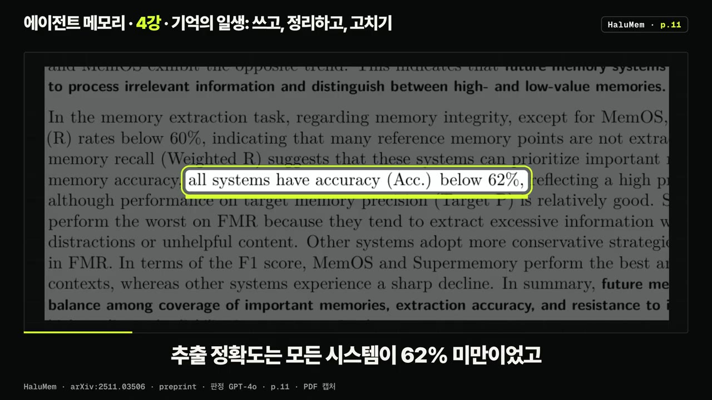
- 결론: 환각은 추출·갱신 단계에서 생겨 쌓인 뒤 질의응답으로 번집니다. 갱신 환각률이 낮게 나온 건 표본이 적어서일 수 있다고 저자들이 밝힙니다.
- 경험 따라 하기: 에이전트가 비슷한 옛 풀이를 그대로 베끼는 현상입니다. 실행 결과를 모두 저장하면 네 에이전트 모두 처음 고정한 기억만 쓸 때보다 낮아졌습니다(예: RAG 에이전트 67.53 → 55.48). 정답과 맞는 실행만 골라 넣었을 때 70.95로 가장 높았습니다.
다시 정리하는 순간의 붕괴와 ACE의 항목 단위 수정
- Useful memories become faulty(동료 심사): 쓸모가 보장된 기록에서 시작해 LLM이 반복해서 정리(consolidation)하게 했더니 기억이 망가졌습니다. (54:19)
- WebShop + AWM: 예시 8개일 때 0.64에서 128개일 때 0.2로 떨어져, 기억이 없을 때와 같아졌습니다.
- ARC-AGI 19문제(기억 없이 100%): 문제마다 갱신하자 10라운드 뒤 52.6%가 됐고, 한 번에 정리한 쪽은 94.7%를 지켰습니다.
- DeepSeek V4 Pro에 기억 관리를 통째로 맡기자, 기억 없이 28.0 → 정점 40.0 → 18.0으로 떨어져 기억이 없을 때보다 낮아졌습니다. 더 강한 모델도 정점의 위치만 달랐을 뿐 오르다 떨어지는 모양은 같았습니다.
- 원본 기록을 그대로 넣은 대조군은 정리 방법들과 견줄 만했습니다. 저자들은 원본을 1급 증거로 다루고, 정리에는 명시적인 관문을 두라고 권합니다.
- 맥락 붕괴(ACE 논문 3쪽, AppWorld): LLM에게 맥락 전체를 매 단계 다시 쓰게 하자, 60단계의 18,282토큰(정확도 66.7)이 바로 다음 단계에서 122토큰이 됐습니다. 정확도는 57.1로, 적응하지 않은 기준선(63.7)보다도 낮아졌습니다. Dynamic Cheatsheet에서 나온 사례이지만, 통째로 다시 쓰는 방식의 근본 위험이라고 봅니다. (56:14)
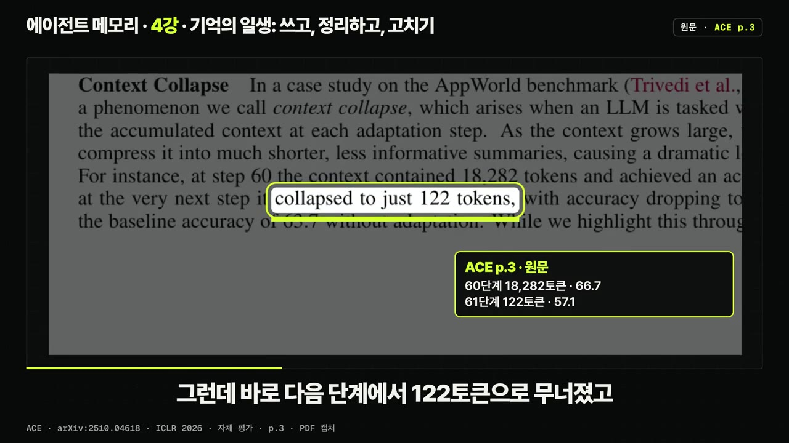
- ACE(ICLR 2026): 맥락을 항목을 한 장씩 끼우는 '플레이북(바인더)'으로 다룹니다. 생성자가 풀고, 반성자가 교훈을 뽑고, 큐레이터가 항목 단위 변경(델타)을 만듭니다. 델타를 합치는 일은 LLM이 아니라 정해진 규칙의 코드가 합니다. 에이전트 과제에서 평균 10.6%, 금융 과제에서 8.6% 나아졌고, AppWorld에서는 DeepSeek V3.1로 GPT-4.1 기반 1위 상용 에이전트와 평균이 같았습니다. 단, Useful Memories 연구에서 ACE도 한 설정에서는 정점을 찍고 떨어졌습니다. (56:52)
덮어쓰지 않고 대체하기(supersede)
- Mem0의 DELETE는 지우개처럼 옛 내용과 바뀐 시점을 남기지 않습니다. 반면 같은 논문의 그래프판은 낡은 관계를 무효로 표시만 합니다. 'Delete'라고 쓰여 있어도 실제로 지워지는지는 구현을 확인해야 합니다. (57:57)
- 이 시리즈가 택한 방법은 회계장부식입니다. 틀린 줄을 지우지 않고 줄을 그어 '대체됨' 도장을 찍은 뒤, 새 줄이 옛 줄을 가리키게 합니다.
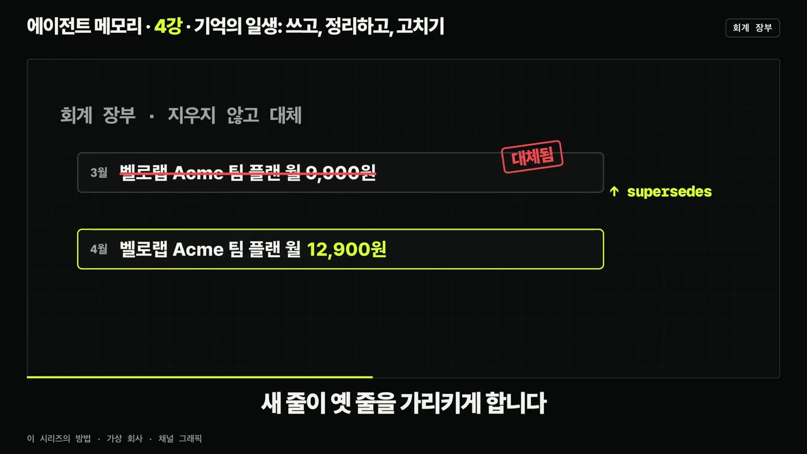
- 예: 팀 플랜 가격이 바뀌면 옛 가격 줄은 남기고 새 가격 줄을 더합니다. 그러면 지금 값과 함께 언제 무엇이 바뀌었는지도 답할 수 있습니다.
- 원본 대화는 추가만 하는 events에 남기고, 기억(claim)은 derived_from으로 원본을 가리키며, 바뀐 기억만 supersede로 대체합니다. 대체 이력의 순서는 recorded_at이 정합니다.
- 대체된 기억은 기본 조회에서 빠지고, 이력 조회를 켜면 보입니다. 유효 시간과 기록 시간을 따로 두는 방법은 7강에서 다룹니다.
- 메모리 파일에 바로 쓸 수 있는 프롬프트 2개를 소개합니다(전문은 화면과 설명란 참고). (59:26)
- 프롬프트 1: 예전 버전과 지금 버전을 넣으면 덮어써져 사라진 사실을 찾아 '변경 이력' 절만 만듭니다. 지금 버전은 고치지 않고, 원문에 없는 사실은 만들지 않게 막습니다. 가상 파일로 3번 돌렸더니 3번 모두 7건을 찾았습니다(에이크미 요금 9,900원 → 12,900원, 관리자 서윤 → 하린 등). '확인 필요'는 회차마다 1~4건으로 달랐습니다.
- 프롬프트 2: 메모리 요약이나 CLAUDE.md를 다시 정리할 때 씁니다. 전체를 다시 쓰지 않고 추가·대체·그대로·근거 없음으로 표시한 변경 목록만 받고, 줄마다 원본 문장을 인용하게 합니다. 3번 모두 추가 2, 대체 4, 그대로 1, 근거 없음 2로 같았습니다.
따라 해보기
준비물
- 실습 저장소(로그인 없음): https://github.com/careerhackeralex/ai-memory-lab (실습 01~04는
labs/01~04, 프롬프트는 각 폴더의PROMPT.md) - Claude Code(리허설은 구독 안에서 진행, 보고된 명목 금액은 실습 01 한 회차에 약 1달러)
- 기억 추출용 LLM: 로컬 Ollama(리허설은
Gemma 3 12b, 메모리 16GB 이상) 또는 API 키 공급자. API 키는.env파일에만 둡니다. - Windows는 WSL2 안에서 진행합니다.
- 소요 시간: 실습 01은 15~25분(기계 시간은 모델을 처음 받을 때 약 284초, 받아 둔 뒤 약 181초), 실습 02의 메모 적재에 7~10분, 실습 04는 직접 하면 약 20분
단계별 방법
- 준비물 점검
- 폴더 신뢰하기
- 서버 띄우기
- MCP 연결
- 세션 A 저장
- 세션 B 질문
- 검사 실행
- 데이터 흐름 그리기
- 1준비물 점검
준비물 점검 명령(자막상 'Make Check End',
make check-env류로 추정)으로 준비물 표가 모두 OK인지 보고, 'Make Models'로 모델을 미리 받습니다. (14:00) - 2폴더 신뢰하기
Claude Code를 처음 열 때 뜨는 폴더 신뢰 대화 상자에서 '신뢰'를 눌러야 저장소가 미리 허용한 명령 14개가 적용됩니다.
- 3서버 띄우기
labs/01/PROMPT.md를 Claude Code에 그대로 붙여 넣습니다..env를 열지 않고, 서버를127.0.0.1(내 컴퓨터)에만 엽니다. 상태 블록 4줄이 화면의 값과 같으면 됩니다.- 리허설: 끝까지 66초, 서버 준비 15초. 처음부터 다시 하려면 'make reset'(기억 DB는 저장소 밖 홈 폴더에 남음)
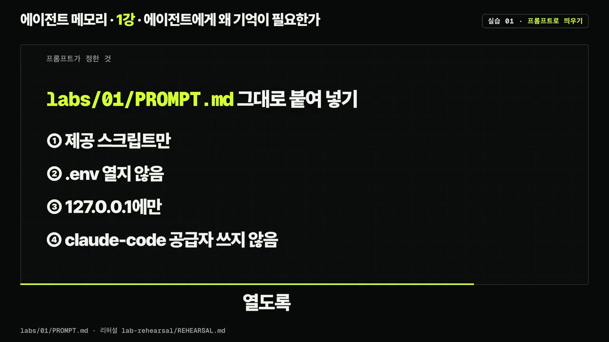
PROMPT.md 그대로 붙여 넣기: .env 열지 않음·127.0.0.1에만 · ▶ 15:18 - 4MCP 연결
화면의 명령으로 Hindsight 서버를 MCP로 연결하고, 목록에
connected가 뜨는지 봅니다. 도구 36개 중 sync retain과 recall 2개만 엽니다.- 기본 retain은 비동기여서 저장이 끝나기 전에 물으면 빈 결과가 나왔습니다(리허설 2회차). 그래서 sync retain을 씁니다.
- 5세션 A 저장
새 세션 A에서 화면의 문장으로 가상 인물 정보를 저장해 달라고 합니다. 추출에 7~14초, 통합에 6~22초가 걸립니다.
- 6세션 B 질문
세션을 닫고 새 세션 B에서 "주로 쓰는 언어"를 묻습니다. recall이 Python 문장을 돌려주고, 그걸 근거로 Python이라고 답하면 성공입니다.
- 7검사 실행
실습 01 검사 명령(자막상 'MakeCheck EP 01')을 실행해 환경 검사 6개 통과와 측정 2개(저장 7.3초, 검색 0.01초, 재시작 후 10.4초)를 확인합니다.
- 8데이터 흐름 그리기
데이터가 저장되는 곳과 나가는 곳을 한 장으로 그립니다(아래 '확인 방법' 참고). (17:45)
- 메모 적재
- 비교 파일 생성
- 규칙 지키기
- 30회 호출
- 표 확인
- 1메모 적재
시작 명령(자막상 'MakeStartEAP01', 정확한 이름은 README 확인)으로 서버를 띄우고, 가상 인물의 연습 메모 50개를
lab02뱅크에 넣습니다(7~10분). (30:07) - 2비교 파일 생성
labs/02/PROMPT.md를 붙여 넣으면 Claude가 세 방식을 비교하는 compare 파일을 만듭니다. 질문은 10개이고, 그중 3개는 메모에 답이 없습니다.- A = 메모 50개 전부, B = Hindsight recall 결과(토큰 상한 300 고정), C = 라벨에 적힌 정답 메모만(오라클)
- 3규칙 지키기
답변 모델과 프롬프트 틀은 똑같이 두고, 질문과 정답 라벨은 Hindsight에 저장하지 않습니다. 답변 호출은 화면의 격리 명령(safe mode + 환경 변수로 자동 기억 끄기)으로 합니다.
- 430회 호출
compare 파일을 실행해 10문항 × 3방식을 호출합니다(약 1분 40초). 결과는
result02.csv에 쌓입니다(자막상 'result 0이 csv'). 사용량 한도에 걸리면 limit 옵션으로 이어 돌립니다. 이미 있는 행은 건너뜁니다. - 5표 확인
실습 02 검사 명령으로 30행을 확인하고 방식별 표를 봅니다.
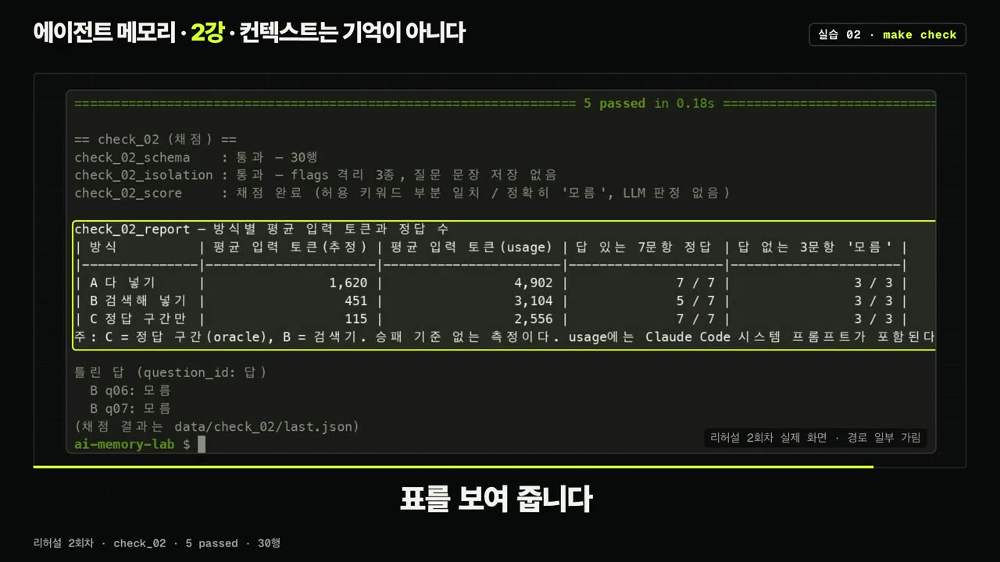
실습 02 리허설 결과
| 방식 | 입력 토큰(저장소 추정치) | 실제 사용량(응답 기준) | 정답(10문항) |
|---|---|---|---|
| A 다 넣기 | 1,620 | 4,902 | 10 |
| B 검색해 넣기 | 451 | 3,104 | 8 |
| C 정답 구간 | 115 | 2,556 | 10 |
- 읽는 법: C와 B의 차이는 검색이 놓친 몫이고, A와 C의 차이는 긴 입력의 효과입니다. 메모가 50개뿐이라 A와 C는 둘 다 만점이었습니다.
- B가 놓친 이유: ① 저장할 때 로컬 모델이 '부산'을 빼고 사실을 뽑았습니다. ② 질문은 '음료', 메모는 '차'라고 써서 사실 69개 중 53번째로 밀렸습니다. NoLiMa가 말한 단어 겹침 문제가 그대로 나온 것입니다.
- 틀 준비
- 구현 요청
- 테스트 8개
- MCP 연결·사용
- Hindsight와 비교
- 1틀 준비
시작 명령(자막상 'MakeStart EP 03')으로 패키지 틀과 계약 문서
INTERFACE.md를 준비합니다(17초). - 2구현 요청
labs/03/PROMPT.md를 붙여 넣으면 Claude가 계약 문서대로 만듭니다(리허설 1분 16초).- claims 테이블 칸 4개: id(머리글
clm), content, type, recorded_at - type은 episodic·semantic·procedural만 받습니다. working이나 opinion은 오류로 거절합니다.
- 시각은 시계 함수 하나에서만 얻고, UTC로 바꿔 끝에
Z를 붙입니다. 시험용으로 환경 변수 주입을 지원합니다.
- claims 테이블 칸 4개: id(머리글
- 3테스트 8개
실습 03 검사 명령으로 도구 목록·종류 제한·넣고 꺼내기·종류 거르기·저장 시각·재시작 후 유지·테이블 모양·터미널 명령을 검사합니다. 테스트 파일은 고치지 말고 구현을 고칩니다.
- 4MCP 연결·사용
README의 명령으로 미니 메모리를 MCP로 연결하고, 가상 대화를 종류별로 저장한 뒤 꺼냅니다. 터미널에서는
mm명령으로 같은 일을 합니다.- 지금의 recall은 단어가 그대로 들어 있어야 찾는 가장 단순한 검색입니다.
- 5Hindsight와 비교
같은 대화를 실습 02의 Hindsight에 넣고, 네 네트워크에 어떻게 나뉘었는지 내 표와 나란히 적습니다(채점하지 않음).
- 시작점 확인
- 기능 추가
- 테스트 16개
- 대화로 시연
- 이력 조회
- 선택 과제
- 1시작점 확인
시작 명령(자막상 'Make Start EP 04')이 실습 03 테스트를 확인합니다. 막혀 있으면 내 코드를 백업 폴더로 옮기고
labs/03정답 코드를 깔아 줍니다(7.4초). Hindsight는 꺼져 있어도 됩니다. - 2기능 추가
labs/04/PROMPT.md를 붙여 넣습니다(리허설 2분 30초).- events 테이블: 원본 대화를 한 줄씩 넣고 id는
evt로 시작합니다. 수정·삭제는 SQLite 트리거로 막습니다. - claims에 status·supersedes·derived_from 칸을 추가합니다.
- 인용 검사: 인용 문장이 원본에 실제로 있을 때만 저장합니다(따옴표·띄어쓰기 차이는 맞춘 뒤 비교).
- 대체는 한 트랜잭션으로 처리해 반쯤 고쳐진 상태가 남지 않게 합니다.
- events 테이블: 원본 대화를 한 줄씩 넣고 id는
- 3테스트 16개
실습 04 검사 명령으로 3강 테스트 8개와 4강 테스트 8개를 함께 돌립니다(약 13초). 원본 수정 거절, 대체 후 옛 내용 유지, 없는 인용 거절, 이중 대체 오류를 확인합니다.
- 4대화로 시연
Claude Code에서 도구 record_event·remember·supersede·recall을 확인한 뒤, 가상 대화 10턴을 원본으로 넣습니다. 1턴을 근거로 "팀 플랜 월 9,900원"을 기억하고, 5턴을 근거로 "월 12,900원"으로 대체합니다.
- 일부러 원문에 없는 인용("이미 12,900원으로 고쳤어")을 붙이면 서버가 거절하고, 근거 이벤트 ID(9턴)를 돌려줍니다.
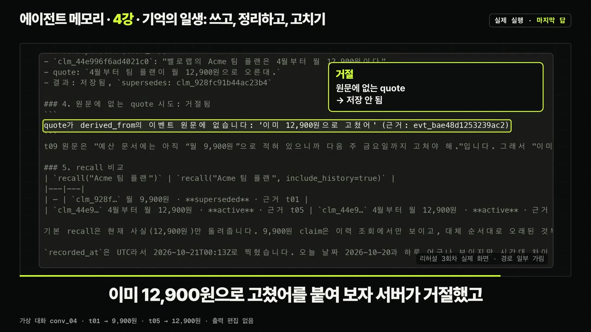
없는 quote '이미 12,900원으로 고쳤어' 거절, 근거 evt ID 표시 · ▶ 1:06:55 - 5이력 조회
include history를 켜면 두 기억이 기록 시각 순서로 나옵니다. 터미널에서는
uv run mm으로 관리자를 서윤에서 하린으로 대체합니다. type을 적지 않아도 옛 기억의 종류를 이어받습니다. - 6선택 과제
Claude(자막상 '클로드 데시피',
claude -p로 추정)로 가상 대화에서 뽑은 기억과 인용을 인용 검사에 통과시켜 보고, 거절된 수만 적습니다(리허설 11~12개 추출, 거절 0개).
따라 할 수 있는지 점검
- ✅ 바로 따라 할 수 있음: 각 실습의 흐름(PROMPT.md 붙여 넣기 → 검사 명령 → 결과 확인), 테스트 개수와 통과 기준, 리허설 수치와의 비교
- ⚠️ 모든 실습 「준비·검사 명령」: 자막이 음성 받아쓰기여서
make명령의 정확한 이름(check-env, models, start-ep01, check-ep01 등)이 불분명합니다. → 저장소 README와 Makefile에서 실제 타깃 이름을 확인하세요. - ⚠️ 실습 01 4단계 「MCP 연결」: Hindsight를 MCP로 연결하는 명령 원문은 화면에만 나옵니다. → 영상 15:43 화면이나
labs/01README를 참고하세요. - ⚠️ 실습 01 5단계 「세션 A 저장」: 저장 요청 문장의 원문이 자막에 없습니다. → 영상 16:21 화면이나 PROMPT.md를 확인하세요.
- ⚠️ 실습 02 3단계 「격리 명령」: safe mode 옵션과 자동 기억을 끄는 환경 변수 이름이 자막에 없습니다. → 영상 31:12 화면이나
labs/02문서를 확인하세요. - ⚠️ 따라 하기 프롬프트 4개(SKILL.md 초안, 기억 4종류 분류, 변경 이력 만들기, 재정리 규칙)의 전문이 자막에 없습니다. → 영상 38:11·42:08·59:26·1:00:30 화면을 캡처하거나, 설명란·강의 노트를 참고하세요.
- ⚠️ 실습 01 1단계 「준비물」: Windows는 WSL2 설치와 Ollama 설치 과정이 영상에서 생략됐습니다. → (보충) Microsoft 공식 문서의
wsl --install, ollama.com 설치 안내를 참고하세요. - ❓ Alice 예시의 의견 확신도가 한 번은 '0.8x', 한 번은 '0.85'로 들려 엇갈립니다. → 논문 4쪽 그림 1을 확인하세요.
- ❓ 실습 01 데이터 흐름에서 Postgres 위치를 말한 부분('4장 포스트그레스큐엘')이 자막상 불분명합니다. → 영상 17:45 화면을 확인하세요.
확인 방법
- 실습 01: 세션 B가 recall 결과를 근거로 'Python'이라고 답하고, 검사에서 환경 6개와 측정 2개가 통과합니다. recall이 비어 있으면 "근거가 없다"고 답하는 것이 정상입니다(Claude Code 자체 기억은 꺼 둔 상태).
- 데이터 흐름: 기억과 임베딩은 PC 안 Postgres에 있고, 임베딩은 PC의 CPU로 계산합니다. Ollama라면 추출할 문장도 PC 안에 머물고, API 키를 쓰면 그 회사로 나갑니다. Claude Code와 나눈 대화(recall 결과 포함)는 Anthropic으로 가고, LLM 요청 추적은 뱅크를 지워도 기본 하루 동안 남습니다.
- 실습 02: 표가 30행이고, 검사가 질문이 뱅크에 저장되지 않았는지까지 확인합니다.
- 실습 03·04: 테스트가 각각 8개, 16개 모두 통과하고, 이력 조회에서 새 기억의 supersedes가 옛 기억을 가리킵니다.
막히면
- 세션 B가 빈 결과를 받으면: 기본 retain은 비동기입니다. sync retain을 쓰고 있는지 확인하세요.
- 다시 시작하려면: 기억 DB가 저장소 밖 홈 폴더에 남아 있으니 reset 명령을 실행합니다.
- 테스트가 실패하면: 테스트 파일은 고치지 말고 구현을 고칩니다.
- 실습 03이 막혔다면: 실습 04 시작 명령이 내 코드를 백업하고 정답 코드를 깔아 줍니다.
- 결과가 리허설과 다르면: 추출은 LLM이 하므로 실행마다 달라질 수 있습니다. 그래서 Hindsight 비교와 선택 과제는 채점하지 않습니다.
기억할 숫자·인용
- 95%: 생성형 AI에서 수익을 내지 못한 조직 비율(MIT NANDA, 예비 결과)
- Reflexion: GPT-4 HumanEval 80.1% → 91.0%. MBPP에서는 77.1%로 오히려 하락
- Lost in the Middle: 정답이 가운데 있을 때 53.8%로, 문서를 안 준 경우(56.1%)보다 낮음
- NoLiMa: GPT-4 주장 128K / 유효 8K, GPT-4.1 주장 100만 / 유효 16K
- MemGPT: 35.3% → 93.4%(지난 5세션 질문)
- Hindsight: 39.0 → 83.6(GPT-OSS 20B, 채점 GPT-OSS 120B)
- 맥락 붕괴: 18,282토큰 → 122토큰, 정확도 66.7 → 57.1(기준선 63.7)
- "관련 정보가 컨텍스트에 있느냐보다 그 정보가 어떻게 제시되느냐가 더 중요하다" (Context Rot)
- "원본은 추가만 하고, 고칠 때는 덮어쓰지 않고 대체한다" (4강 결론)
생각해볼 점
- (영상 설명 기준) 이 강의는 에이전트가 논문 약 150편을 모아 만든 것이고, 본편 내레이션은 AI 음성입니다. 숫자마다 조건과 쪽 번호를 붙였다고 하지만, 중요한 수치는 설명란의 원문 링크로 직접 확인하는 것이 안전합니다.
- (내 의견) 실습 02는 메모 50개 규모라서 '긴 입력의 효과'(A와 C의 차이)가 드러나지 않았습니다. 내 실제 업무 데이터 규모로 다시 재야 의미 있는 결론을 얻을 수 있습니다.
- (내 의견) 대체 방식은 이력이 계속 쌓이므로, 저장 공간과 조회 성능 문제나 오래된 이력을 언제 정리할지는 이 1부에서 다루지 않았습니다. 영상은 유효 시간·기록 시간 분리(7강)와 저장 원칙(8강)을 뒤에서 다룬다고 예고합니다.
바로 해볼 일
- 내 CLAUDE.md나 메모리 파일의 예전 버전(Git 이력)과 지금 버전을 영상 59:26의 '변경 이력' 프롬프트에 넣고, 덮어써져 사라진 사실이 있는지 확인하기
- 다음에 에이전트에게 일을 맡기기 전에 세 질문(무엇을 알아야 하나 / 무엇에서 배워야 하나 / 지금 무엇을 붙잡아야 하나)으로 넘겨줄 기억을 점검하고, 가장 중요한 근거는 프롬프트 맨 앞이나 맨 뒤에 두기
ai-memory-lab저장소를 받아 README에서 make 명령 이름을 확인한 뒤 실습 01 해 보기